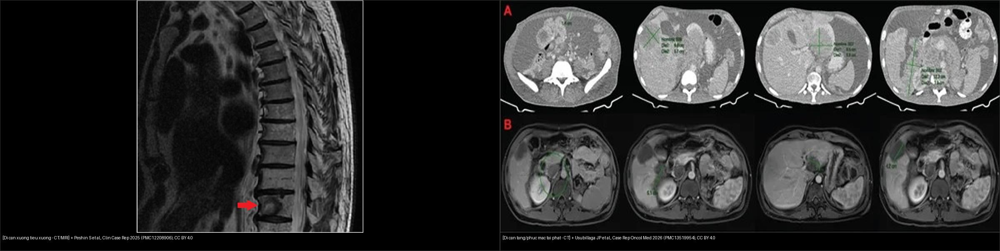
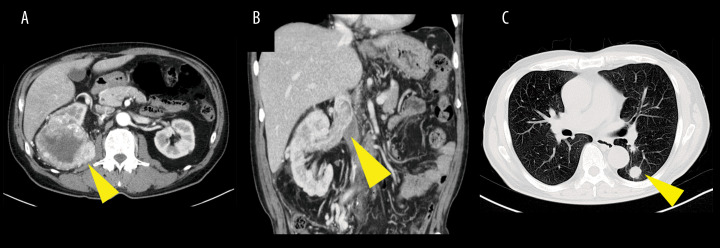
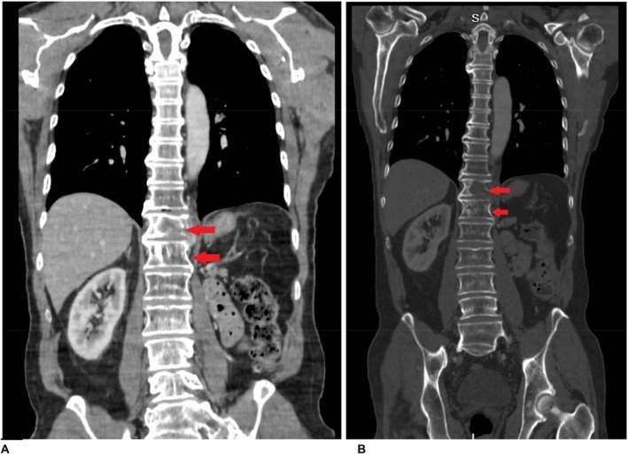
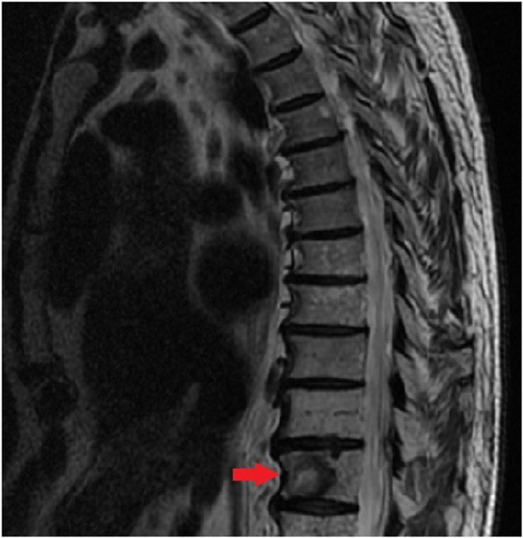
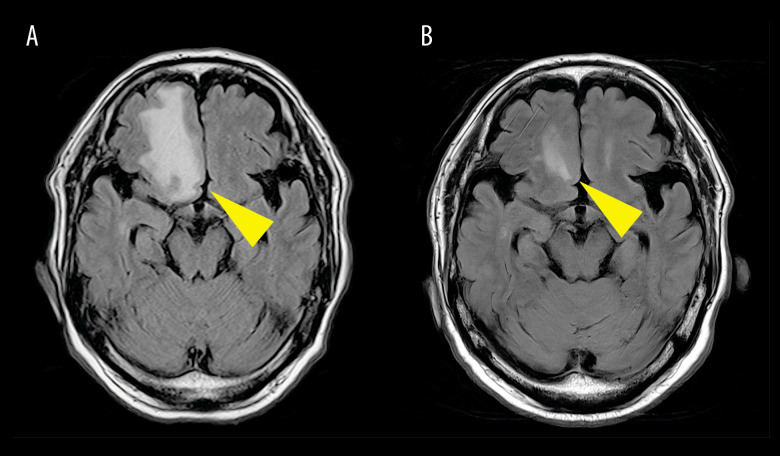
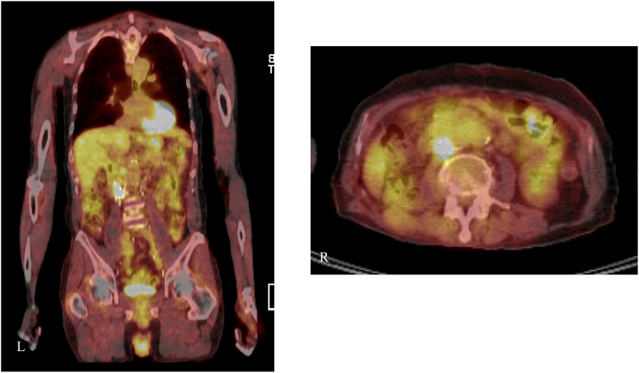
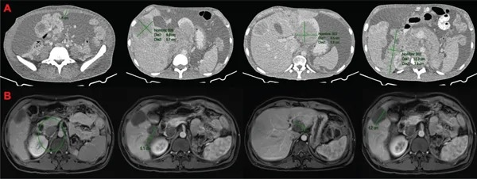
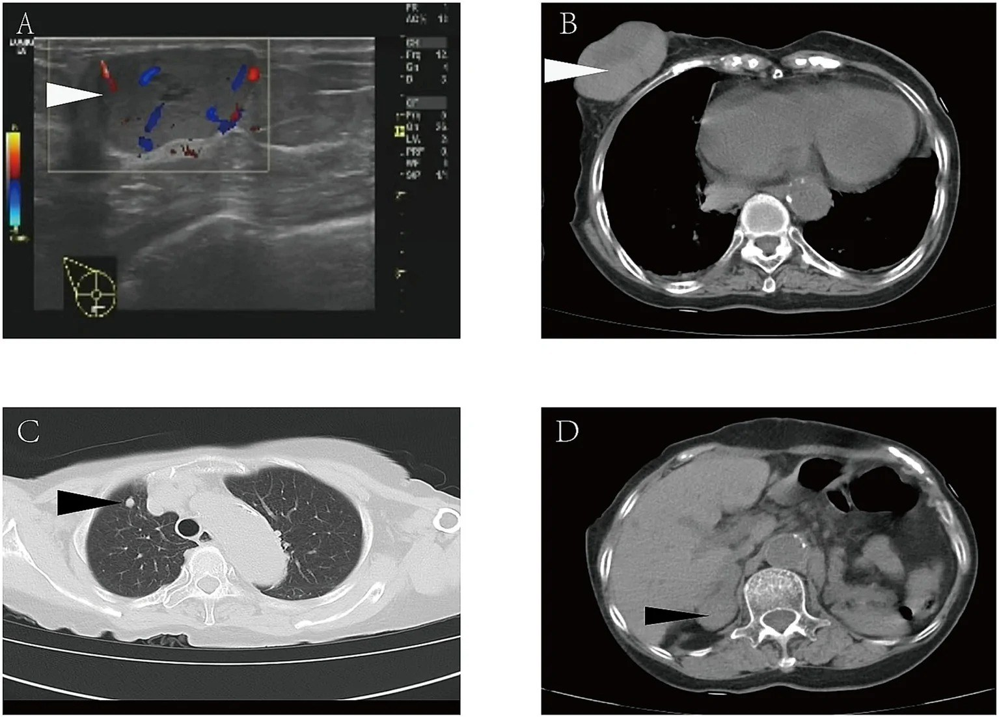

154 — Ung thư tế bào thận di căn & theo dõi sau cắt thận / Metastatic RCC & post-nephrectomy surveillance
Tags: pattern:u-than-dac pattern:di-can-rcc vung:than protocol:theo-doi-sau-cat-than score:RECIST incidentaloma:u-than-tinh-co
Mức chắc chắn (certainty): tổng hợp y văn (literature synthesis) — nhóm tự biên từ y văn mở (Am J Case Rep 2026, Clin Case Rep 2025, Urol Case Rep 2026, Case Rep Oncol Med 2026, Front Med 2026, Cancers 2026), số liệu lấy nguyên từ bài gốc; có 1 ca nguyên văn (Ca 5).
1. Tổng quan — vì sao "đã cắt thận rồi" vẫn phải theo dõi, và hình ảnh đọc gì
- Ung thư tế bào thận (renal cell carcinoma — RCC) là u ác ống thận, hay gặp nhất là thể tế bào sáng (clear cell RCC — ccRCC) (~75%); RCC có hai nét riêng: di căn theo đường máu rất sớm (qua TM thận → TM chủ dưới → phổi) và di căn muộn/rất muộn (đã ghi nhận 18–30 năm sau cắt thận) (PMC13503303, PMC13519954).
- TẠI SAO vẫn phải theo dõi sau cắt thận: mô hình không phải "cắt là hết" mà là bệnh hệ thống có thể tồn dư ở mức vi thể. Sau điều trị triệt căn, ~30% bệnh nhân tái phát/di căn (AUA); giai đoạn nguy cơ rất cao tái phát > 65%, riêng thể biệt hóa sarcomatoid ~70% (PMC13360029). Mô đệm giàu mạch + mất gen ức chế VHL → tăng HIF → tăng VEGF → u giàu mạch, dễ ngấm mạnh và dễ chảy máu (nên di căn xương của RCC thường tiêu xương, ngấm mạnh, dễ vỡ).
- TẠI SAO di căn RCC "hiện hình" theo cách riêng (vật lý tín hiệu):
- Di căn xương tiêu xương: hủy xương do u + phản ứng mạch → trên CT ổ tiêu xương bờ rõ, phá vỏ, có phần mô mềm ngấm mạnh; trên MRI T1 thấp (tủy bị thay thế) — tương phản rất rõ ở người > 40 tuổi vì tủy vàng T1 vốn sáng (PMC12208906).
- Di căn não: vùng phù quanh u T2/FLAIR tăng tín hiệu, u ngấm viền sau tiêm; hay ở ngã ba/chỗ nối chất trắng–chất xám (PMC13383680).
- Di căn phổi: nốt tròn đặc nhiều ổ ("đạn thần công — cannonball"), mô mềm giàu mạch nên có thể ngấm mạnh và hoại tử/chảy máu khi lớn.
- Ngưỡng định lượng khung (chốt): thể tích u/nốt trên CT dùng để chấm RECIST 1.1; tiến triển (PD) = tổng đường kính đích tăng ≥ 20% VÀ ≥ 5 mm so với nadir, hoặc xuất hiện tổn thương mới, hoặc tiến triển rõ không mơ hồ. Tái phát tại chỗ (giường thận) sau cắt thận: nốt mô mềm trong/ven giường thận, thường ngấm thì động mạch – thải thì muộn, phải phân biệt mô sẹo/xơ hậu mổ (ngấm chậm, ổn định) và nhánh mạch/mô mỡ (PMC13126283).
2. Mẫu hình + chẩn đoán phân biệt theo vị trí (gamut)
- Nốt mô mềm ở giường thận sau cắt thận → tái phát tại chỗ, mô sẹo hậu mổ, quai ruột dính, hạch cạnh ĐMC mới, di căn thượng thận cùng bên.
- Nốt phổi nhiều ổ hai bên → di căn RCC (đạn thần công), di căn u khác, lao/nấm (nốt vệ tinh + hang), nốt viêm.
- Tổn thương tiêu xương đơn/đa ổ → di căn RCC (ngấm mạnh, dễ chảy máu), di căn tuyến tiền liệt/vú (tạo xương), myeloma (tiêu xương bờ rõ không ngấm mô mềm), xương hóa trị.
- Khối trong não có phù nhiều → di căn não (RCC, phổi, melanoma), u nguyên phát TKTW, áp-xe.
- Di căn "không hay gặp": phúc mạc và nhiều khoang ổ bụng (PMC13519954), tá tràng/đường tiêu hóa (PMC12208906), vú (PMC13503303), tụy, tuyến giáp — các vị trí này thường gắn với bệnh lan rộng, tiên lượng xấu, đừng vì "hiếm" mà loại trừ.
- Gợi nhớ "LBBH + R": Lung (phổi) · Bone (xương) · Brain (não) · Hepatic (gan) · Rare (phúc mạc, tá tràng, vú, tụy) — "LBBH" là 4 đích kinh điển theo đường máu; R là nhóm ít gặp nhưng cần nhớ.
3. Bảng so sánh phân biệt (ma trận đối chiếu)
| Thực thể (entity) | Hình ảnh điển hình (CT/MRI theo thì) | Chốt vào (rule-in) | Chốt loại (rule-out) | Gợi ý xác nhận |
|---|---|---|---|---|
| Tái phát TẠI CHỖ (giường thận) | Nốt mô mềm trong/ven giường thận, ngấm mạnh thì ĐM + thải thì muộn; PET/CT ngấm FDG | Nốt ngấm mới/tăng kích thước so với phim cũ ở giường thận | Khối ổn định nhiều năm, ngấm chậm đồng nhất = sẹo; mỡ đơn thuần = mô mỡ | So phim cũ; cắt ngang mỏng; PET/CT; ctDNA khi hình ảnh mơ hồ (PMC13126283) |
| Di căn PHỔI | Nốt tròn đặc, nhiều ổ hai bên, thì đáy phổi, kích thước tăng dần | Nốt mới/đa ổ hai bên + tiền sử RCC | Nốt vệ tinh + tree-in-bud = lao; hang = nhiễm trùng/K | CT ngực; theo dõi thể tích theo RECIST |
| Di căn XƯƠNG (tiêu xương) | Ổ tiêu xương bờ rõ + phá vỏ + mô mềm ngấm mạnh; MRI T1 thấp, T2/STIR cao; nguy cơ chèn ép tủy | T1 thấp + ngấm + tiêu xương ở BN có RCC | Tạo xương đặc = di căn tuyến tiền liệt; tủy đỏ T1 ≥ cơ = lành | CT xương; MRI (đánh giá tủy/chèn ép); xạ hình/PET |
| Di căn NÃO | Tổn thương ở nối chất trắng–chất xám, phù T2/FLAIR rộng, ngấm viền | Phù rộng + ngấm viền + bệnh cảnh ung thư | Áp-xe (DWI sáng/ADC tối), u nguyên phát | MRI não T1+Gd, DWI; xạ định vị (SRS) khi ít ổ |
| Di căn TẠNG/PHÚC MẠC (hiếm) | Bánh mạc nối/nốt phúc mạc, hạch sau phúc mạc, tổn thương gan; kèm cổ trướng | Nốt phúc mạc/hạch mới + tiền sử RCC + báng | Báng lành, lao phúc mạc, u nguyên phát phúc mạc | CT bụng-có cản quang; PET/CT; mô bệnh |
| Di căn VÚ (rất hiếm) | Khối vú đặc ngấm mạnh, có thể chảy máu; kèm nốt phổi/thượng thận | Khối vú mới + tiền sử cắt thận RCC (dù rất muộn) | Ung thư vú nguyên phát (vôi hóa, bờ gai) | Siêu âm + sinh thiết; IHC (PAX8+, CAIX+) |

Trái: di căn xương tiêu xương thân đốt sống (RCC điển hình — hủy xương, ngấm mạnh, dễ chèn ép tủy). Phải: di căn nhiều khoang (phúc mạc + hạch sau phúc mạc) — nhóm ít gặp nhưng tiên lượng xấu. Nguồn: Peshin S et al., Clin Case Rep 2025 (PMC12208906) + Usubillaga JP et al., Case Rep Oncol Med 2026 (PMC13519954), CC BY 4.0. Ảnh ghép letterbox.4. Protocol + giai đoạn TNM 8 + RECIST + hướng theo dõi
- CT ngực–bụng–khung chậu có cản quang là nền tảng cho giai đoạn và theo dõi; MRI bụng khi cần đánh giá huyết khối TM chủ dưới/giai đoạn mạch máu; MRI não khi nghi di căn TKTW; PET/CT khi hình ảnh mơ hồ/không điển hình (nhưng tổn thương < 5 mm / tổn thương bàng quang–phổi có thể âm giả — nên không dùng đơn độc).
- Giai đoạn TNM 8 (AJCC) — cần nhớ ngưỡng kích thước: T1a ≤ 4 cm, T1b 4–7 cm, T2a 7–10 cm, T2b > 10 cm; T3a = xâm lấn mỡ quanh thận/xoang thận/nhánh tĩnh mạch, T3b = huyết khối TM chủ dưới dưới cơ hoành, T3c = trên cơ hoành; T4 = xâm lấn ngoài mạc Gerota/thượng thận cùng bên.
- Phân độ huyết khối TM chủ dưới (Mayo I–IV): I = trong TM thận, II = trong TM chủ dưới dưới gan, III = trong gan/tới gan, IV = tới nhĩ phải (Ca 1 là độ II; Ca 5 là độ IV).
- Theo dõi thích ứng nguy cơ (risk-adapted, EAU/AUA): nhóm thấp → thưa (nhiều hướng dẫn ngừng theo dõi chuyên biệt sau ~5–10 năm nếu giai đoạn thấp); nhóm trung gian → CT ngực + bụng khoảng mỗi 6 tháng trong 3 năm đầu, rồi hằng năm; nhóm cao/rất cao → mỗi 3–6 tháng trong 3–5 năm đầu. RCC di căn muộn → không dừng theo dõi máy móc theo mốc thời gian nếu BN còn trẻ/nguy cơ cao.
- RECIST 1.1: đích = tối đa 5 tổn thương/bệnh nhân (2/tạng); PD = tăng ≥ 20% VÀ ≥ 5 mm so với nadir, hoặc tổn thương mới. Đáp ứng hoàn toàn (CR) = mất hết tổn thương đích, hạch < 10 mm.
flowchart TD
A[RCC da cat than] --> B{Co trieu chung / dau moi?}
B -->|Co| C[CT/MRI nguc-bung + MRI nao neu nghi]
B -->|Khong| D[CT nguc-bung theo lich thich ung nguy co]
D --> E{Co ton thuong moi / to len?}
E -->|Khong| F[Tiep tuc theo doi dinh ky]
E -->|Mo ho| G[PET/CT + so phim cu + ctDNA neu co]
E -->|Ro| H[Cham RECIST 1.1]
G --> H
H --> I{Tong duong kinh tang >=20% VA >=5mm?}
I -->|Co| J[Tien trien: toan than + danh gia tai cho SRS/mo/metastasectomy]
I -->|Khong| K[On dinh: theo doi tiep]
A --> L{Nghi chan ep tuy / di can nao don doc?}
L -->|Co| M[MRI cap cuu: giai ep/mo; SRS 1-3 o]
5. Biến thể bình thường và cạm bẫy
- Mô sẹo/keo hậu mổ ở giường thận ngấm thuốc thì muộn và ổn định nhiều năm — đừng gọi tái phát; so phim cũ là chốt (PMC13126283).
- Huyết khối TM chủ dưới do u vs do huyết khối lành: huyết khối u ngấm mạnh (có tân mạch), lan liên tục với u thận, có thể tăng đậm độ; huyết khối lành ngấm kém, dính thành. MRI/CT có cản quang phân biệt.
- PET/CT âm giả: nốt nhỏ < 5 mm, di căn phổi/bàng quang có thể không ngấm FDG — PET âm KHÔNG loại trừ tái phát; ngược lại viêm/sau mổ có thể ngấm giả (PMC13126283).
- Di căn xương ở người > 40 tuổi: tủy vàng T1 vốn sáng; bất kỳ tổn thương T1 tối hơn cơ/đĩa + ngấm đều đáng ngờ — không "bỏ qua vì già".
- "Hiếm" không có nghĩa là không: di căn tá tràng/vú/phúc mạc đều đã có ca (PMC12208906, PMC13503303, PMC13519954); BN RCC cũ có triệu chứng tiêu hóa/vú mới phải soi hình ảnh.
- Sai sót do thỏa mãn tìm kiếm (satisfaction of search): thấy u thận rồi dừng → bỏ sót huyết khối TM chủ dưới + di căn phổi (Ca 1). Luôn đọc phổi và dòng TM thận–chủ dưới trên cùng phim.
- Tái phát muộn: đừng loại trừ chỉ vì "đã 20 năm" — ca vú xuất hiện 20 năm sau cắt thận (PMC13503303).
6. Tự lượng giá — Blind Quiz
Ca 1 — Nam 73 tuổi, tình cờ, chẩn đoán cuối cùng "RCC di căn". CT bụng (A) và ngực (B–C)?

- Hỏi: Ngoài u thận, còn hai tổn thương "chết người" nào? Chúng ở đâu? Giai đoạn T bao nhiêu?
Bấm để hiện đáp án (findings + chẩn đoán)
- Findings: (A) u thận phải ngấm mạnh; (B) huyết khối mô mềm trong TM chủ dưới (mũi tên vàng); (C) nhiều nốt phổi hai bên (di căn).
- Chẩn đoán: ccRCC di căn (M1) + huyết khối TM chủ dưới độ II (Mayo) → giai đoạn pT3b — phân biệt với huyết khối lành (không ngấm, không dính u). Bước tiếp: đa mô thức (hệ thống + cân nhắc cắt thận/thrombectomy trì hoãn); theo dõi MRI não vì ca này sau đó di căn não muộn đơn độc dù đáp ứng ngoài sọ hoàn toàn.
- Nguồn: Ito F et al., Am J Case Rep 2026, Fig 1, PMC13383680, CC BY-NC-ND 4.0.
Ca 2 — Bệnh nhân RCC, MRI cột sống ngực (A) và ảnh tiêu xương (B):

- Hỏi: Tín hiệu tổn thương trên T1 và T2/STIR? Vì sao đây là "cấp cứu tiềm ẩn"?
Bấm để hiện đáp án (findings + chẩn đoán)
- Findings: nhiều tổn thương đốt sống T1 tín hiệu thấp + T2/STIR tăng (mũi tên đỏ) = di căn tủy xương. Chẩn đoán: di căn xương RCC — nguy cơ chèn ép tủy (có phần mô mềm/đường vào ống sống) → cần MRI khẩn + corticoid/mổ hoặc xạ khi có chèn ép.
- Vì sao T1 thấp: tế bào u thay thế tủy vàng (vốn giàu mỡ, T1 sáng); nước/phù tự do T2 tăng. Nguồn: Peshin S et al., Clin Case Rep 2025, Fig 1, PMC12208906, CC BY 4.0.
Ca 3 — Cùng bệnh nhân, phim cắt dọc đốt sống có ổ tiêu xương:

- Hỏi: Kiểu hủy xương này gợi ung thư nào? Cần phân biệt với tạo xương?
Bấm để hiện đáp án (findings + chẩn đoán)
- Findings: ổ tiêu xương phá vỏ thân đốt + mô mềm (mũi tên đỏ). Chuỗi chốt: RCC là ung thư tiêu xương (lytic) ngấm mạnh, dễ chảy máu — khác di căn tạo xương đặc (tuyến tiền liệt/vú). Chẩn đoán: di căn xương RCC. Nguồn: Peshin S et al., Clin Case Rep 2025, Fig 2, PMC12208906, CC BY 4.0.
Ca 4 — Cùng bệnh nhân Ca 1, sau đáp ứng hoàn toàn ngoài sọ, xuất hiện triệu chứng thần kinh. MRI FLAIR (A) và sau xạ (B):

- Hỏi: Ổ tổn thương nằm ở đâu? Đặc điểm phù? Hướng xử trí?
Bấm để hiện đáp án (findings + chẩn đoán)
- Findings: tổn thương thùy trán phải (mũi tên vàng) + phù FLAIR rộng quanh u; (B) sau xạ định vị (SRT) giảm kích thước rõ. Chẩn đoán: di căn não đơn độc muộn của ccRCC (dù đáp ứng hoàn toàn ngoài sọ) → xạ định vị 1–3 ổ; đừng bỏ MRI não khi BN RCC có triệu chứng TKTW mới. Nguồn: Ito F et al., Am J Case Rep 2026, Fig 4, PMC13383680, CC BY-NC-ND 4.0.
Ca 5 (ca nguyên văn) — Nam RCC có huyết khối TM chủ dưới độ IV, sau cắt thận + lấy huyết khối. Một năm sau hình ảnh mơ hồ, chụp PET/CT:

- Hỏi: Có nốt ngấm ở đâu? Khi hình ảnh mơ hồ thì dựa vào đâu để phát hiện bệnh tồn dư?
Bấm để hiện đáp án (findings + chẩn đoán)
- Findings: PET/CT ngấm FDG nhẹ (SUVmax ~2,2) ở giường thận phải + 3 ổ ngấm sau phúc mạc sau TM chủ dưới, tương ứng nốt mô mềm trên CT trước. Chẩn đoán: tái phát tại chỗ/sau phúc mạc — ca nguyên văn cho thấy ctDNA dương tính đã thúc đẩy mổ sớm dù hình ảnh còn mơ hồ. Chốt: khi hình ảnh chưa rõ, so phim cũ + PET/CT + dấu ấn phân tử (ctDNA) giúp quyết định. Nguồn: Ghavshough MH et al., Urol Case Rep 2026, Fig 2, PMC13126283, CC BY-NC-ND 4.0.
Ca 6 — Nam 31 tuổi ccRCC pT3aN0M0, 7 tháng sau cắt thận xuất hiện báng bụng. CT cản quang:

- Hỏi: Những khoang nào bị tổn thương? Đây là vị trí di căn "kinh điển" hay "hiếm"?
Bấm để hiện đáp án (findings + chẩn đoán)
- Findings: di căn phúc mạc + hạch sau phúc mạc + tổn thương gan + huyết khối TM chủ dưới (nhiều khoang). Chẩn đoán: tái phát nhiều khoang của ccRCC — di căn phúc mạc là vị trí RẤT hiếm, gắn với bệnh lan rộng/tiên lượng xấu, nhưng ca này đáp ứng tốt với pembrolizumab + lenvatinib rồi mổ giảm khối hoàn toàn (IMDC nhóm nguy cơ xấu). Nguồn: Usubillaga JP et al., Case Rep Oncol Med 2026, Fig 2, PMC13519954, CC BY 4.0.
Ca 7 — Nữ 88 tuổi, cắt thận vì ccRCC cách đây 20 năm, nay khối vú phải chảy máu. Siêu âm + CT:

- Hỏi: Vì sao không nghĩ "ung thư vú nguyên phát"? Ngoài khối vú còn gì?
Bấm để hiện đáp án (findings + chẩn đoán)
- Findings: (A) siêu âm khối vú đặc có mạch; (B–D) CT có khối vú + nốt phổi phải + khối thượng thận phải. Chẩn đoán: di căn vú của ccRCC 20 năm sau cắt thận (rất hiếm) — đã vỡ chảy máu; IHC PAX8+/CAIX+ giúp xác nhận nguồn thận. Chốt: tiền sử RCC + nhiều ổ (vú, phổi, thượng thận) → nghĩ di căn RCC muộn, không phải ung thư vú. Nguồn: Huang C et al., Front Med 2026, Fig 1, PMC13503303, CC BY 4.0.
Ca 8 — Ghép đối chiếu: hai kiểu di căn, hai nguy cơ khác nhau:
Bấm để hiện đáp án (findings + chẩn đoán)
- Trái — di căn xương tiêu xương: nguy cơ chèn ép tủy/gãy xương bệnh lý → MRI khẩn, xạ/mổ, bisphosphonate. Phải — di căn tạng/phúc mạc: gắn bệnh lan rộng, cân nhắc toàn thân ± mổ giảm khối. Chốt: cùng là "di căn RCC" nhưng vị trí quyết định biến chứng và cách can thiệp. Nguồn: PMC12208906 + PMC13519954, CC BY 4.0.
Bài liên quan chéo
- 100 – Tổng quan hệ Bụng
- 151 – U thận đặc: RCC vs oncocytoma vs AML (chẩn đoán u nguyên phát)
- 150 – Nang thận Bosniak
- 156 – Hội chứng di truyền u thận (RCC hai bên/người trẻ)
- 153 – Thận nang mắc phải trên lọc máu (nguy cơ RCC ×100)
- 155 – Thượng thận tình cờ (di căn thượng thận — Ca 7)
Ảnh
- Tên file:
154_slug_Modality_SourceID.jpg. Nguồn + giấy phép từng ảnh trongimages/CREDITS.md. - Ảnh CC BY-NC-ND (PMC13383680, PMC13126283) giữ nguyên bản, không crop/ghép; ảnh ghép chỉ dùng ảnh CC BY (letterbox nền đen).
Không dùng để chẩn đoán độc lập khi chưa có người hướng dẫn.